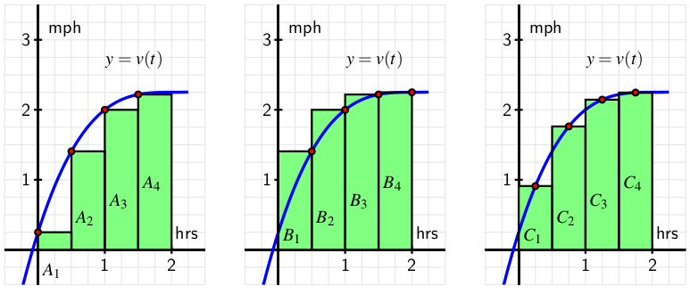
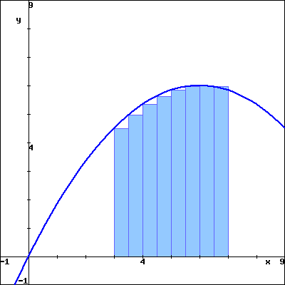
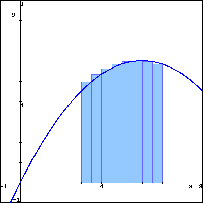

How can we use a Riemann sum to estimate the area between a given curve and the horizontal axis over a particular interval?
What are the differences among left, right, middle, and random Riemann sums?
How can we write Riemann sums in an abbreviated form?
In Section 4.1, we learned that if an object moves with positive velocity \(v\text{,}\) the area between \(y = v(t)\) and the \(t\)-axis over a given time interval tells us the distance traveled by the object over that time period. If \(v(t)\) is sometimes negative and we view the area of any region below the \(t\)-axis as having an associated negative sign, then the sum of these signed areas tells us the moving object’s change in position over a given time interval.
For instance, for the velocity function given in Figure 4.2.1, if the areas of shaded regions are \(A_1\text{,}\)\(A_2\text{,}\) and \(A_3\) as labeled, then the total distance \(D\) traveled by the moving object on \([a,b]\) is
\begin{equation*}
D = A_1 + A_2 + A_3\text{,}
\end{equation*}
while the total change in the object’s position on \([a,b]\) is
Figure4.2.1.A velocity function that is sometimes negative.
Because the motion is in the negative direction on the interval where \(v(t) \lt 0\text{,}\) we subtract \(A_2\) to determine the object’s total change in position.
Of course, finding \(D\) and \(s(b)-s(a)\) for the graph in Figure 4.2.1 presumes that we can actually find the areas \(A_1\text{,}\)\(A_2\text{,}\) and \(A_3\text{.}\) So far, we have worked with velocity functions that were either constant or linear, so that the area bounded by the velocity function and the horizontal axis is a combination of rectangles and triangles, and we can find the area exactly. But when the curve bounds a region that is not a familiar geometric shape, we cannot find its area exactly. Indeed, this is one of our biggest goals in Chapter 4: to learn how to find the exact area bounded between a curve and the horizontal axis for as many different types of functions as possible.
In Activity 4.1.2, we approximated the area under a nonlinear velocity function using rectangles. In the following preview activity, we consider three different options for the heights of the rectangles we will use.
Preview Activity4.2.1.
A person walking along a straight path has her velocity in miles per hour at time \(t\) given by the function \(v(t) = 0.25t^3 - 1.5t^2 + 3t +
0.25\text{,}\) for times in the interval \(0 \leq t \leq 2\text{.}\) The graph of this function is also given in each of the three diagrams below.

Note that in each diagram, we use four rectangles to estimate the area under \(y = v(t)\) on the interval \([0, 2]\text{,}\) but the method by which the four rectangles’ respective heights are decided varies among the three individual graphs.
Think about how the heights of the rectangles in the left-most diagram are being chosen. Determine the value of \(S=A_1+A_2+A_3+A_4\) by evaluating the function \(y=v(t)\) at appropriately-chosen values and observing the width of each rectangle. Note, for example, that \(A_3 = v(1)\cdot \frac{1}{2} = 2\cdot \frac{1}{2} = 1\text{.}\)
\(S =\)
Use the rectangles in the middle diagram to find the value of \(T=B_1+B_2+B_3+B_4\text{.}\)
\(T =\)
Use the rectangles in the right-most diagram to find the value of \(U=C_1+C_2+C_3+C_4\text{.}\)
\(U =\)
Which estimate do you think is the best approximation of \(D\text{,}\) the total distance the person traveled on \([0,2]\text{?}\)
\(\displaystyle T\)
\(\displaystyle S\)
\(\displaystyle U\)
Why?
Rectangles are always below the graph of \(v(t)\)
Rectangles are always above the graph of \(v(t)\)
Rectangles are partially above the graph of \(v(t)\) and partially below
None of these
Subsection4.2.1Sigma Notation
We have used sums of areas of rectangles to approximate the area under a curve. Intuitively, we expect that using a larger number of thinner rectangles will provide a better estimate for the area. Consequently, we anticipate dealing with sums of a large number of terms. To do so, we introduce sigma notation, named for the Greek letter \(\Sigma\text{,}\) which is the capital letter \(S\) in the Greek alphabet.
We read the symbol \(\sum_{k=1}^{100} k\) as “the sum from \(k\) equals 1 to 100 of \(k\text{.}\)” The variable \(k\) is called the index of summation, and any letter can be used for this variable. The pattern in the terms of the sum is denoted by a function of the index; for example,
Sigma notation allows us to vary easily the function being used to describe the terms in the sum, and to adjust the number of terms in the sum simply by changing the value of \(n\text{.}\) We test our understanding of this new notation in the following activity.
Activity4.2.2.
For each sum written in sigma notation, write the sum long-hand and evaluate the sum to find its value. For each sum written in expanded form, write the sum in sigma notation.
\(\displaystyle \sum_{k=1}^{5} (k^2 + 2)\)
\(\displaystyle \sum_{i=3}^{6} (2i-1)\)
\(\displaystyle 3 + 7 + 11 + 15 + \cdots + 27\)
\(\displaystyle 4 + 8 + 16 + 32 + \cdots + 256\)
\(\displaystyle \sum_{i=1}^{6} \frac{1}{2^i}\)
Subsection4.2.2Riemann Sums
When a moving body has a positive velocity function \(y = v(t)\) on a given interval \([a,b]\text{,}\) the area under the curve over the interval gives the total distance the body travels on \([a,b]\text{.}\) We are also interested in finding the exact area bounded by \(y = f(x)\) on an interval \([a,b]\text{,}\) regardless of the meaning or context of the function \(f\text{.}\) For now, we continue to focus on finding an accurate estimate of this area by using a sum of the areas of rectangles. Unless otherwise indicated, we assume that \(f\) is continuous and non-negative on \([a,b]\text{.}\)
The first choice we make in such an approximation is the number of rectangles.
Figure4.2.2.Subdividing the interval \([a,b]\) into \(n\) subintervals of equal length \(\Delta x\text{.}\)
If we desire \(n\) rectangles of equal width to subdivide the interval \([a,b]\text{,}\) then each rectangle must have width \(\Delta x = \frac{b-a}{n}\text{.}\) We let \(x_0 = a\text{,}\)\(x_n = b\text{,}\) and define \(x_{i} = a + i\Delta x\text{,}\) so that \(x_1 = x_0 + \Delta x\text{,}\)\(x_2 = x_0 + 2 \Delta x\text{,}\) and so on, as pictured in Figure 4.2.2.
We use each subinterval \([x_i, x_{i+1}]\) as the base of a rectangle, and next choose the height of the rectangle on that subinterval. There are three standard choices: we can use the left endpoint of each subinterval, the right endpoint of each subinterval, or the midpoint of each. These are precisely the options encountered in Preview Activity 4.2.1 and seen in its figure. We next explore how these choices can be described in sigma notation.
Consider an arbitrary positive function \(f\) on \([a,b]\) with the interval subdivided as shown in Figure 4.2.2, and choose to use left endpoints. Then on each interval \([x_{i}, x_{i+1}]\text{,}\) the area of the rectangle formed is given by
Figure4.2.3.Subdividing the interval \([a,b]\) into \(n\) subintervals of equal length \(\Delta x\) and approximating the area under \(y = f(x)\) over \([a,b]\) using left rectangles.
If we let \(L_n\) denote the sum of the areas of these rectangles, we see that
Note that since the index of summation begins at \(0\) and ends at \(n-1\text{,}\) there are indeed \(n\) terms in this sum. We call \(L_n\) the left Riemann sum for the function \(f\) on the interval \([a,b]\text{.}\)
To see how the Riemann sums for right endpoints and midpoints are constructed, we consider Figure 4.2.4.
Figure4.2.4.Riemann sums using right endpoints and midpoints.
For the sum with right endpoints, we see that the area of the rectangle on an arbitrary interval \([x_i, x_{i+1}]\) is given by \(B_{i+1} = f(x_{i+1}) \cdot \Delta x\text{,}\) and that the sum of all such areas of rectangles is given by
so that \(\overline{x}_{i+1}\) is the midpoint of the interval \([x_i, x_{i+1}]\text{.}\) For instance, for the rectangle with area \(C_1\) in Figure 4.2.4, we now have
and we say that \(M_n\) is the middle Riemann sum for \(f\) on \([a,b]\text{.}\)
Thus, we have two variables to explore: the number of rectangles and the height of each rectangle. We can explore these choices dynamically, and this applet 1  is a particularly useful one. There we see the image shown in Figure 4.2.5, but with the opportunity to adjust the slider bars for the heights and the number of rectangles.
Figure4.2.5.A snapshot of the applet found at gvsu.edu/s/a9.
By moving the sliders, we can see how the heights of the rectangles change as we consider left endpoints, midpoints, and right endpoints, as well as the impact that a larger number of narrower rectangles has on the approximation of the exact area bounded by the function and the horizontal axis.
When \(f(x) \ge 0\) on \([a,b]\text{,}\) each of the Riemann sums \(L_n\text{,}\)\(R_n\text{,}\) and \(M_n\) provides an estimate of the area under the curve \(y = f(x)\) over the interval \([a,b]\text{.}\) We also recall that in the context of a nonnegative velocity function \(y = v(t)\text{,}\) the corresponding Riemann sums approximate the distance traveled on \([a,b]\) by a moving object with velocity function \(v\text{.}\)
There is a more general way to think of Riemann sums, and that is to allow any choice of where the function is evaluated to determine the rectangle heights. Rather than saying we’ll always choose left endpoints, or always choose midpoints, we simply say that a point \(x_{i+1}^*\) will be selected at random in the interval \([x_i, x_{i+1}]\) (so that \(x_i \le x_{i+1}^* \le x_{i+1}\)). The Riemann sum is then given by
\begin{equation*}
f(x_1^*) \cdot \Delta x + f(x_2^*) \cdot \Delta x + \cdots + f(x_{i+1}^*) \cdot \Delta x + \cdots + f(x_n^*) \cdot \Delta x = \sum_{i=1}^{n} f(x_i^*) \Delta x\text{.}
\end{equation*}
The applet noted earlier 2  and referenced in Figure 4.2.5, by unchecking the “relative” box at the top left, and instead checking “random,” we can easily explore the effect of using random point locations in subintervals on a Riemann sum. In computational practice, we most often use \(L_n\text{,}\)\(R_n\text{,}\) or \(M_n\text{,}\) while the random Riemann sum is useful in theoretical discussions. In the following activity, we investigate several different Riemann sums for a particular velocity function.
Activity4.2.3.
Suppose that an object moving along a straight line path has its velocity in feet per second at time \(t\) in seconds given by \(v(t) = \frac{2}{9}(t-3)^2 + 2\text{.}\)
Carefully sketch the region whose exact area will tell you the value of the distance the object traveled on the time interval \(2 \le t \le 5\text{.}\)
Estimate the distance traveled on \([2,5]\) by computing \(L_4\text{,}\)\(R_4\text{,}\) and \(M_4\text{.}\)
Does averaging \(L_4\) and \(R_4\) result in the same value as \(M_4\text{?}\) If not, what do you think the average of \(L_4\) and \(R_4\) measures?
For this question, think about an arbitrary function \(f\text{,}\) rather than the particular function \(v\) given above. If \(f\) is positive and increasing on \([a,b]\text{,}\) will \(L_n\) over-estimate or under-estimate the exact area under \(f\) on \([a,b]\text{?}\) Will \(R_n\) over- or under-estimate the exact area under \(f\) on \([a,b]\text{?}\) Explain.
Subsection4.2.3When the function is sometimes negative
we can of course compute the sum even when \(f\) takes on negative values. We know that when \(f\) is positive on \([a,b]\text{,}\) a Riemann sum estimates the area bounded between \(f\) and the horizontal axis over the interval.
Figure4.2.6.At left and center, two left Riemann sums for a function \(f\) that is sometimes negative; at right, the areas bounded by \(f\) on the interval \([a,d]\text{.}\)
For the function pictured in the first graph of Figure 4.2.6, a left Riemann sum with 12 subintervals over \([a,d]\) is shown. The function is negative on the interval \(b \le x \le c\text{,}\) so at the four left endpoints that fall in \([b,c]\text{,}\) the terms \(f(x_i) \Delta x\) are negative. This means that those four terms in the Riemann sum produce an estimate of the opposite of the area bounded by \(y = f(x)\) and the \(x\)-axis on \([b,c]\text{.}\)
In the middle graph of Figure 4.2.6, we see that by increasing the number of rectangles the approximation of the area (or the opposite of the area) bounded by the curve appears to improve.
In general, any Riemann sum of a continuous function \(f\) on an interval \([a,b]\) approximates the difference between the area that lies above the horizontal axis on \([a,b]\) and under \(f\) and the area that lies below the horizontal axis on \([a,b]\) and above \(f\text{.}\) In the notation of Figure 4.2.6, we may say that
where \(L_{24}\) is the left Riemann sum using 24 subintervals shown in the middle graph. \(A_1\) and \(A_3\) are the areas of the regions where \(f\) is positive, and \(A_2\) is the area where \(f\) is negative. We will call the quantity \(A_1 - A_2 + A_3\) the net signed area bounded by \(f\) over the interval \([a,d]\text{,}\) where by the phrase “signed area” we indicate that we are attaching a minus sign to the areas of regions that fall below the horizontal axis.
Finally, we recall that if the function \(f\) represents the velocity of a moving object, the sum of the areas bounded by the curve tells us the total distance traveled over the relevant time interval, while the net signed area bounded by the curve computes the object’s change in position on the interval.
Activity4.2.4.
Suppose that an object moving along a straight line path has its velocity \(v\) (in feet per second) at time \(t\) (in seconds) given by
Compute \(M_5\text{,}\) the middle Riemann sum, for \(v\) on the time interval \([1,5]\text{.}\) Be sure to clearly identify the value of \(\Delta t\) as well as the locations of \(t_0\text{,}\)\(t_1\text{,}\)\(\cdots\text{,}\)\(t_5\text{.}\) In addition, provide a careful sketch of the function and the corresponding rectangles that are being used in the sum.
Building on your work in (a), estimate the total change in position of the object on the interval \([1,5]\text{.}\)
Building on your work in (a) and (b), estimate the total distance traveled by the object on \([1,5]\text{.}\)
Use appropriate computing technology 3  to compute \(M_{10}\) and \(M_{20}\text{.}\) What exact value do you think the middle sum eventually approaches as \(n\) increases without bound? What does that number represent in the physical context of the overall problem?
Subsection4.2.4Summary
A Riemann sum is simply a sum of products of the form \(f(x_i^*) \Delta x\) that estimates the area between a positive function and the horizontal axis over a given interval. If the function is sometimes negative on the interval, the Riemann sum estimates the difference between the areas that lie above the horizontal axis and those that lie below the axis.
The three most common types of Riemann sums are left, right, and middle sums, but we can also work with a more general Riemann sum. The only difference among these sums is the location of the point at which the function is evaluated to determine the height of the rectangle whose area is being computed. For a left Riemann sum, we evaluate the function at the left endpoint of each subinterval, while for right and middle sums, we use right endpoints and midpoints, respectively.
The left, right, and middle Riemann sums are denoted \(L_n\text{,}\)\(R_n\text{,}\) and \(M_n\text{,}\) with formulas
\begin{align*}
L_n = f(x_0) \Delta x + f(x_1) \Delta x + \cdots + f(x_{n-1}) \Delta x \amp= \sum_{i = 0}^{n-1} f(x_i) \Delta x,\\
R_n = f(x_1) \Delta x + f(x_2) \Delta x + \cdots + f(x_{n}) \Delta x \amp= \sum_{i = 1}^{n} f(x_i) \Delta x,\\
M_n = f(\overline{x}_1) \Delta x + f(\overline{x}_2) \Delta x + \cdots + f(\overline{x}_{n}) \Delta x \amp= \sum_{i = 1}^{n} f(\overline{x}_i) \Delta x\text{,}
\end{align*}
where \(x_0 = a\text{,}\)\(x_i = a + i\Delta x\text{,}\) and \(x_n = b\text{,}\) using \(\Delta x = \frac{b-a}{n}\text{.}\) For the midpoint sum, \(\overline{x}_{i} = (x_{i-1} + x_i)/2\text{.}\)
Exercises4.2.5Exercises
1.
In this problem, use the general expressions for left and right sums,
\begin{equation*}
\mbox{left-hand sum} = f(t_0)\Delta t + f(t_1)\Delta t + \cdots +
f(t_{n-1})\Delta t
\end{equation*}
and
\begin{equation*}
\mbox{right-hand sum} = f(t_1)\Delta t + f(t_2)\Delta t + \cdots +
f(t_{n})\Delta t,
\end{equation*}
and the following table:
\(t\)
0
5
10
15
20
\(f(t)\)
37
36
34
33
29
A. If we use \(n = 4\) subdivisions, fill in the values:
C. If we use \(n = 2\) subdivisions, fill in the values:
\(\Delta t =\)
\(t_0 =\) ; \(t_1 =\) ; \(t_2 =\)
\(f(t_0) =\) ; \(f(t_1) =\) ; \(f(t_2) =\)
D. Find the left and right sums using \(n = 2\)
left sum =
right sum =
2.
The rectangles in the graph below illustrate a left endpoint Riemann sum for \(\displaystyle f(x) = \frac{x^{2}}{12}\) on the interval \(\lbrack 3, 7 \rbrack\text{.}\)
The value of this left endpoint Riemann sum is , and this Riemann sum is
[select an answer]
an overestimate of
equal to
an underestimate of
there is ambiguity
the area of the region enclosed by \(\displaystyle y = f(x)\text{,}\) the x-axis, and the vertical lines x = 3 and x = 7.
Left endpoint Riemann sum for \(y = \frac{x^{2}}{12}\) on \(\lbrack 3, 7 \rbrack\)
The rectangles in the graph below illustrate a right endpoint Riemann sum for \(\displaystyle f(x) = \frac{x^{2}}{12}\) on the interval \(\lbrack 3, 7 \rbrack\text{.}\)
The value of this right endpoint Riemann sum is , and this Riemann sum is
[select an answer]
an overestimate of
equal to
an underestimate of
there is ambiguity
the area of the region enclosed by \(\displaystyle y = f(x)\text{,}\) the x-axis, and the vertical lines x = 3 and x = 7.
Right endpoint Riemann sum for \(y = \frac{x^{2}}{12}\) on \(\lbrack 3, 7 \rbrack\)
3.
The rectangles in the graph below illustrate a left endpoint Riemann sum for \(\displaystyle f(x) = \frac{-x^{2}}{6}+2x\) on the interval \(\lbrack 3, 7 \rbrack\text{.}\)
The value of this left endpoint Riemann sum is , and this Riemann sum is
[select an answer]
an overestimate of
equal to
an underestimate of
there is ambiguity
the area of the region enclosed by \(\displaystyle y = f(x)\text{,}\) the x-axis, and the vertical lines x = 3 and x = 7.

Left endpoint Riemann sum for \(y = \frac{-x^{2}}{6}+2x\) on \(\lbrack 3, 7 \rbrack\)
The rectangles in the graph below illustrate a right endpoint Riemann sum for \(\displaystyle f(x) = \frac{-x^{2}}{6}+2x\) on the interval \(\lbrack 3, 7 \rbrack\text{.}\)
The value of this right endpoint Riemann sum is , and this Riemann sum is
[select an answer]
an overestimate of
equal to
an underestimate of
there is ambiguity
the area of the region enclosed by \(\displaystyle y = f(x)\text{,}\) the x-axis, and the vertical lines x = 3 and x = 7.

Right endpoint Riemann sum for \(y = \frac{-x^{2}}{6}+2x\) on \(\lbrack 3, 7 \rbrack\)
4.
In this problem, use the general expressions for left and right sums,
\begin{equation*}
\mbox{left-hand sum} = f(t_0)\Delta t + f(t_1)\Delta t + \cdots +
f(t_{n-1})\Delta t
\end{equation*}
and
\begin{equation*}
\mbox{right-hand sum} = f(t_1)\Delta t + f(t_2)\Delta t + \cdots +
f(t_{n})\Delta t,
\end{equation*}
and the following table:
\(t\)
0
2
4
6
8
\(f(t)\)
36
34
31
30
28
A. If we use \(n = 4\) subdivisions, fill in the values:
C. If we use \(n = 2\) subdivisions, fill in the values:
\(\Delta t =\)
\(t_0 =\) ; \(t_1 =\) ; \(t_2 =\)
\(f(t_0) =\) ; \(f(t_1) =\) ; \(f(t_2) =\)
D. Find the left and right sums using \(n = 2\)
left sum =
right sum =
5.
On a sketch of \(y = e^{x}\text{,}\) represent the left Riemann sum with \(n = 2\) approximating \(\int_{2}^{3}\,e^{x}\,dx\text{.}\) Write out the terms of the sum, but do not evaluate it:
Sum = +
On another sketch, represent the right Riemann sum with \(n = 2\) approximating \(\int_{2}^{3}\,e^{x}\,dx\text{.}\) Write out the terms of the sum, but do not evaluate it:
Sum = +
Which sum is an overestimate?
the right Riemann sum
the left Riemann sum
neither sum
Which sum is an underestimate?
the left Riemann sum
the right Riemann sum
neither sum
6.
Suppose \(\displaystyle f(x) = \frac{13}{x}\)
(a) The rectangles in the graph on above illustrate a left endpoint Riemann sum for \(f(x)\) on the interval \(2 \leq x \leq 4\text{.}\) The value of this left endpoint Riemann sum is , and it is an
overestimate of
equal to
underestimate of
there is ambiguity
the area of the region enclosed by \(\displaystyle y = f(x)\text{,}\) the x-axis, and the vertical lines \(x = 2\) and \(x = 4\text{.}\)
(b) The rectangles in the graph above illustrate a right endpoint Riemann sum for \(f(x)\) on the interval \(2 \leq x \leq 4\text{.}\) The value of this right endpoint Riemann sum is , and it is an
overestimate of
equal to
underestimate of
there is ambiguity
the area of the region enclosed by \(\displaystyle y = f(x)\text{,}\) the x-axis, and the vertical lines \(x = 2\) and \(x = 4\text{.}\)
7.
The rate (in liters per minute) at which water drains from a tank is recorded at half-minute intervals. Use the average of the left- and right-endpoint approximations to estimate the total amount of water drained during the first 3 min.
\(t\) min
0
0.5
1
1.5
2
2.5
3
rate in l/min
48
46
44
42
40
38
36
Answer: liters.
8.
Consider the function \(f(x) = 3x + 4\text{.}\)
Compute \(M_4\) for \(y=f(x)\) on the interval \([2,5]\text{.}\) Be sure to clearly identify the value of \(\Delta x\text{,}\) as well as the locations of \(x_0, x_1, \ldots, x_4\text{.}\) Include a careful sketch of the function and the corresponding rectangles being used in the sum.
Use a familiar geometric formula to determine the exact value of the area of the region bounded by \(y = f(x)\) and the \(x\)-axis on \([2,5]\text{.}\)
Explain why the values you computed in (a) and (b) turn out to be the same. Will this be true if we use a number different than \(n = 4\) and compute \(M_n\text{?}\) Will \(L_4\) or \(R_4\) have the same value as the exact area of the region found in (b)?
Describe the collection of functions \(g\) for which it will always be the case that \(M_n\text{,}\) regardless of the value of \(n\text{,}\) gives the exact net signed area bounded between the function \(g\) and the \(x\)-axis on the interval \([a,b]\text{.}\)
Assume that \(S\) is a right Riemann sum. For what function \(f\) and what interval \([a,b]\) is \(S\) this function’s Riemann sum? Why?
How does your answer to (a) change if \(S\) is a left Riemann sum? a middle Riemann sum?
Suppose that \(S\) really is a right Riemann sum. What is geometric quantity does \(S\) approximate?
Use sigma notation to write a new sum \(R\) that is the right Riemann sum for the same function, but that uses twice as many subintervals as \(S\text{.}\)
10.
A car traveling along a straight road is braking and its velocity is measured at several different points in time, as given in the following table.
Table4.2.7.Data for the braking car.
seconds, \(t\)
\(0\)
\(0.3\)
\(0.6\)
\(0.9\)
\(1.2\)
\(1.5\)
\(1.8\)
Velocity in ft/sec, \(v(t)\)
\(100\)
\(88\)
\(74\)
\(59\)
\(40\)
\(19\)
\(0\)
Plot the given data on a set of axes with time on the horizontal axis and the velocity on the vertical axis.
Estimate the total distance traveled during the car the time brakes using a middle Riemann sum with 3 subintervals.
Estimate the total distance traveled on \([0,1.8]\) by computing \(L_6\text{,}\)\(R_6\text{,}\) and \(\frac{1}{2}(L_6 + R_6)\text{.}\)
Assuming that \(v(t)\) is always decreasing on \([0,1.8]\text{,}\) what is the maximum possible distance the car traveled before it stopped? Why?
11.
The rate at which pollution escapes a scrubbing process at a manufacturing plant increases over time as filters and other technologies become less effective. For this particular example, assume that the rate of pollution (in tons per week) is given by the function \(r\) that is pictured in Figure 4.2.8.
Use the graph to estimate the value of \(M_4\) on the interval \([0,4]\text{.}\)
What is the meaning of \(M_4\) in terms of the pollution discharged by the plant?
Suppose that \(r(t) = 0.5 e^{0.5t}\text{.}\) Use this formula for \(r\) to compute \(L_5\) on \([0,4]\text{.}\)
Determine an upper bound on the total amount of pollution that can escape the plant during the pictured four week time period that is accurate within an error of at most one ton of pollution.
Figure4.2.8.The rate, \(r(t)\text{,}\) of pollution in tons per week.
gvsu.edu/s/a9
gvsu.edu/s/a9
For instance, consider the applet and change the function and adjust the locations of the blue points that represent the interval endpoints \(a\) and \(b\text{.}\)